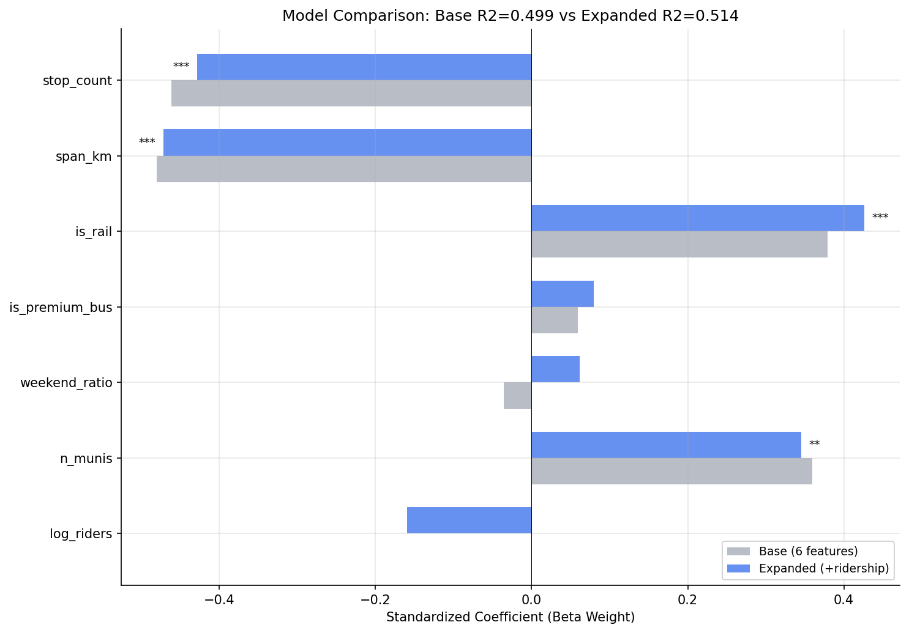
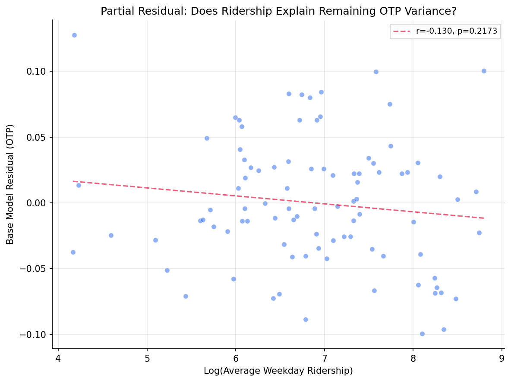

Analysis
26 - Ridership in Multivariate OTP Model
Ridership and External Factors
Coverage: 2017-01 to 2025-11 (from otp_monthly, ridership_monthly).
Built 2026-04-03 20:09 UTC · Commit 7c56b9a
Page Navigation
Analysis Navigation
Data Provenance
flowchart LR
26_ridership_multivariate(["26 - Ridership in Multivariate OTP Model"])
t_otp_monthly[("otp_monthly")] --> 26_ridership_multivariate
01_data_ingestion[["Data Ingestion"]] --> t_otp_monthly
u1_01_data_ingestion[/"data/routes_by_month.csv"/] --> 01_data_ingestion
u2_01_data_ingestion[/"data/PRT_Current_Routes_Full_System_de0e48fcbed24ebc8b0d933e47b56682.csv"/] --> 01_data_ingestion
u3_01_data_ingestion[/"data/Transit_stops_(current)_by_route_e040ee029227468ebf9d217402a82fa9.csv"/] --> 01_data_ingestion
u4_01_data_ingestion[/"data/PRT_Stop_Reference_Lookup_Table.csv"/] --> 01_data_ingestion
u5_01_data_ingestion[/"data/average-ridership/12bb84ed-397e-435c-8d1b-8ce543108698.csv"/] --> 01_data_ingestion
t_ridership_monthly[("ridership_monthly")] --> 26_ridership_multivariate
01_data_ingestion[["Data Ingestion"]] --> t_ridership_monthly
t_route_stops[("route_stops")] --> 26_ridership_multivariate
01_data_ingestion[["Data Ingestion"]] --> t_route_stops
t_routes[("routes")] --> 26_ridership_multivariate
01_data_ingestion[["Data Ingestion"]] --> t_routes
t_stops[("stops")] --> 26_ridership_multivariate
01_data_ingestion[["Data Ingestion"]] --> t_stops
d1_26_ridership_multivariate(("numpy (lib)")) --> 26_ridership_multivariate
d2_26_ridership_multivariate(("polars (lib)")) --> 26_ridership_multivariate
d3_26_ridership_multivariate(("scipy (lib)")) --> 26_ridership_multivariate
classDef page fill:#dbeafe,stroke:#1d4ed8,color:#1e3a8a,stroke-width:2px;
classDef table fill:#ecfeff,stroke:#0e7490,color:#164e63;
classDef dep fill:#fff7ed,stroke:#c2410c,color:#7c2d12,stroke-dasharray: 4 2;
classDef file fill:#eef2ff,stroke:#6366f1,color:#3730a3;
classDef api fill:#f0fdf4,stroke:#16a34a,color:#14532d;
classDef pipeline fill:#f5f3ff,stroke:#7c3aed,color:#4c1d95;
class 26_ridership_multivariate page;
class t_otp_monthly,t_ridership_monthly,t_route_stops,t_routes,t_stops table;
class d1_26_ridership_multivariate,d2_26_ridership_multivariate,d3_26_ridership_multivariate dep;
class u1_01_data_ingestion,u2_01_data_ingestion,u3_01_data_ingestion,u4_01_data_ingestion,u5_01_data_ingestion file;
class 01_data_ingestion pipeline;
Findings
Findings: Ridership in Multivariate OTP Model
Summary
Adding log-transformed average weekday ridership to the Analysis 18 multivariate model does not significantly improve explanatory power. The F-test for the ridership term is not significant (F = 2.53, p = 0.116), and R² increases by only 1.5 pp (from 0.499 to 0.514). Ridership is not collinear with stop count or span (VIF = 1.73), but it is largely redundant with the existing predictors -- once route structure is controlled for, knowing how many people ride a route tells you almost nothing additional about its OTP.
Key Numbers
| Model | R² | Adj R² | n |
|---|---|---|---|
| Base (6 features, Analysis 18 replication) | 0.499 | 0.464 | 92 |
| Expanded (+ log_riders) | 0.514 | 0.473 | 92 |
| Bus-only base (5 features) | 0.392 | 0.355 | 89 |
| Bus-only expanded (+ log_riders) | 0.410 | 0.367 | 89 |
| Ridership-only (log_riders + is_rail) | 0.232 | 0.215 | 92 |
- F-test for log_riders (all routes): F = 2.53, p = 0.116
- F-test for log_riders (bus only): F = 2.55, p = 0.114
- log_riders beta weight: -0.16 (weakly negative, not significant)
- VIF for log_riders: 1.73 (no multicollinearity concern)
- Ridership-only model explains just 23.2% of variance (vs 49.9% for structural model)
Expanded model coefficients
| Feature | Beta Weight | p-value |
|---|---|---|
| stop_count | -0.43 | <0.001 |
| span_km | -0.47 | <0.001 |
| is_rail | +0.43 | <0.001 |
| n_munis | +0.35 | 0.005 |
| log_riders | -0.16 | 0.116 |
| is_premium_bus | +0.08 | 0.511 |
| weekend_ratio | +0.06 | 0.605 |
Observations
- The base model replicates Analysis 18's results closely (R² = 0.499 here vs 0.472 in Analysis 18; the small difference is because this analysis restricts to routes with ridership data, dropping 0 routes from the 92-route sample).
- Log ridership has a weakly negative coefficient (beta = -0.16): higher-ridership routes tend to have slightly worse OTP after controls, but the effect is not statistically significant. This is consistent with Analysis 19's finding that ridership-weighted OTP is slightly higher than trip-weighted -- the two observations are not contradictory because the relationship is weak and confounded.
- Log ridership is surprisingly uncorrelated with stop count (r = +0.15, p = 0.16) and span (r = -0.00, p = 1.00). It is most strongly correlated with weekend_ratio (r = +0.57) -- routes with more riders tend to have relatively more weekend service.
- The ridership-only model (log_riders + is_rail, R² = 0.232) explains less than half the variance of the structural model (0.499), confirming that ridership is a weak proxy for the real drivers of OTP (stop count and span).
- All VIFs remain below 3.0 in the expanded model, so multicollinearity is not a concern.
Discussion
This is a clean null result. Ridership does not add meaningful information to the OTP model once route structure is accounted for. The practical implication is that PRT does not need to worry that high ridership per se degrades OTP -- the routes with poor OTP happen to have high ridership because they are long, many-stop local bus corridors, not because passenger volumes cause delays. This is consistent with Analysis 10's finding that trip frequency does not predict OTP.
The weak negative direction of the ridership coefficient (-0.16 beta) is suggestive but not significant, and it could reflect residual confounding (high-ridership routes serve congested urban corridors) rather than a causal ridership-to-delay mechanism.
Caveats
- Ridership is measured as average daily weekday riders per route, not per-trip load. Per-trip crowding data would better test the hypothesis that passenger volumes cause delays through dwell time.
- The log transform assumes diminishing marginal effects; a linear specification also fails to reach significance (not shown).
- The sample is restricted to 92 routes with both OTP and ridership data; 6 OTP-only routes are excluded.
- As with Analysis 18, the model's unexplained 50% of variance likely requires operational data (traffic, staffing, schedule slack) not available in this dataset.
Output

beta weight comparison between base and expanded models.

partial residual plot for log_ridership.
No interactive outputs declared.
side-by-side regression results (base vs expanded vs bus-only).
Preview CSV
VIF values for expanded model.
Preview CSV
Methods
Methods: Ridership in Multivariate OTP Model
Question
Does average ridership add explanatory power to the Analysis 18 OLS model (stop count, span, mode, n_munis, premium, weekend ratio) or is it collinear with existing predictors?
Approach
- Replicate the Analysis 18 six-feature OLS model on routes with ridership data available.
- Add log-transformed average weekday ridership as a seventh predictor. Log transform is used because ridership is right-skewed and the relationship with OTP is expected to be diminishing (doubling from 100 to 200 riders matters more than from 5,000 to 5,100).
- Compare adjusted R² between the six-feature and seven-feature models using a nested F-test.
- Check VIF for the expanded model to assess multicollinearity with stop count and span.
- If ridership is significant, test a reduced model (ridership + mode only) to see if ridership proxies for stop count.
- Report beta weights, p-values, and model comparison statistics.
- Repeat with bus-only subset.
Data
| Name | Description | Source |
|---|---|---|
otp_monthly |
route_id, month, otp (averaged to route-level) | prt.db table |
ridership_monthly |
route_id, month, avg_riders (averaged across all months); filtered to day_type='WEEKDAY' | prt.db table |
route_stops |
route_id, stop_id for stop counts | prt.db table |
stops |
lat, lon for geographic span computation | prt.db table |
routes |
route_id, mode for subtype classification | prt.db table |
Notes: Overlap period (Jan 2019 -- Oct 2024); exclude routes with fewer than 12 months of paired data.
Output
output/model_comparison.csv-- side-by-side regression results (base vs expanded vs bus-only)output/vif_table.csv-- VIF values for expanded modeloutput/coefficient_comparison.png-- beta weight comparison between base and expanded modelsoutput/partial_residual.png-- partial residual plot for log_ridership
Source Code
|
Sources
| Name | Type | Why It Matters | Owner | Freshness | Caveat |
|---|---|---|---|---|---|
| otp_monthly | table | Primary analytical table used in this page's computations. | Produced by Data Ingestion. | Updated when the producing pipeline step is rerun. | Coverage depends on upstream source availability and ETL assumptions. |
Upstream sources (5)
|
|||||
| ridership_monthly | table | Primary analytical table used in this page's computations. | Produced by Data Ingestion. | Updated when the producing pipeline step is rerun. | Coverage depends on upstream source availability and ETL assumptions. |
Upstream sources (5)
|
|||||
| route_stops | table | Primary analytical table used in this page's computations. | Produced by Data Ingestion. | Updated when the producing pipeline step is rerun. | Coverage depends on upstream source availability and ETL assumptions. |
Upstream sources (5)
|
|||||
| routes | table | Primary analytical table used in this page's computations. | Produced by Data Ingestion. | Updated when the producing pipeline step is rerun. | Coverage depends on upstream source availability and ETL assumptions. |
Upstream sources (5)
|
|||||
| stops | table | Primary analytical table used in this page's computations. | Produced by Data Ingestion. | Updated when the producing pipeline step is rerun. | Coverage depends on upstream source availability and ETL assumptions. |
Upstream sources (5)
|
|||||
| numpy | dependency | Runtime dependency required for this page's pipeline or analysis code. | Open-source Python ecosystem maintainers. | Version pinned by project environment until dependency updates are applied. | Library updates may change behavior or defaults. |
| polars | dependency | Runtime dependency required for this page's pipeline or analysis code. | Open-source Python ecosystem maintainers. | Version pinned by project environment until dependency updates are applied. | Library updates may change behavior or defaults. |
| scipy | dependency | Runtime dependency required for this page's pipeline or analysis code. | Open-source Python ecosystem maintainers. | Version pinned by project environment until dependency updates are applied. | Library updates may change behavior or defaults. |